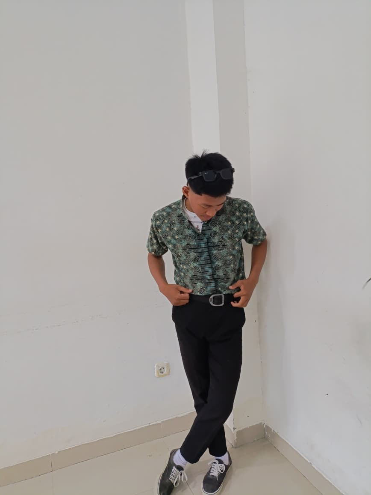

Mahasiswa Pendidikan Teknologi Informasi Universitas Sulawesi Barat
Saya tertarik pada teknologi informasi, desain website, dan pengembangan web.
Mahasiswa Pendidikan Teknologi Informasi Universitas Sulawesi Barat yang tertarik pada teknologi dan pengembangan website.
Lihat Proyek SayaMahasiswa Pendidikan Teknologi Informasi
TENTANG SAYA
Saya merupakan mahasiswa Program Studi Pendidikan Teknologi Informasi, Fakultas Keguruan dan Ilmu Pendidikan, Universitas Sulawesi Barat.
Saya sedang mempelajari pengembangan website menggunakan HTML, CSS, Bootstrap 5, dan JavaScript. Portofolio ini menjadi tempat untuk memperkenalkan profil, keterampilan, dan hasil pembelajaran saya.
KOMPETENSI
Menyusun struktur dan konten halaman website.
Mengatur tampilan dan desain website.
Membuat antarmuka yang responsif.
Menambahkan interaksi dan validasi form.
HASIL PEMBELAJARAN
Contoh proyek yang dapat dikembangkan selama perkuliahan.
Website multi-halaman untuk memperkenalkan destinasi wisata Sulawesi Barat.
Lihat WebsiteForm latihan yang memeriksa username, format email, dan panjang password.
Lihat Form